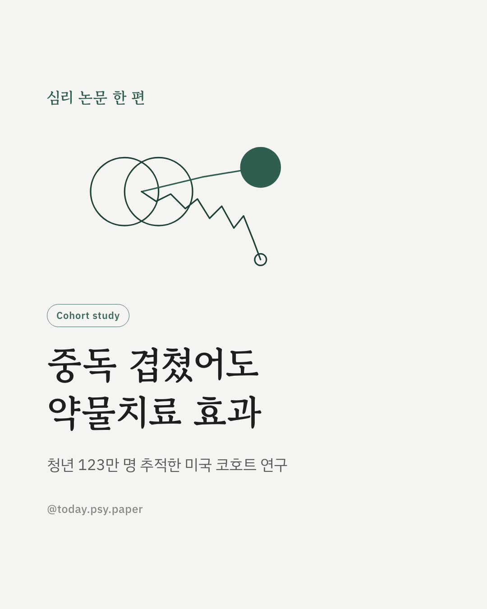
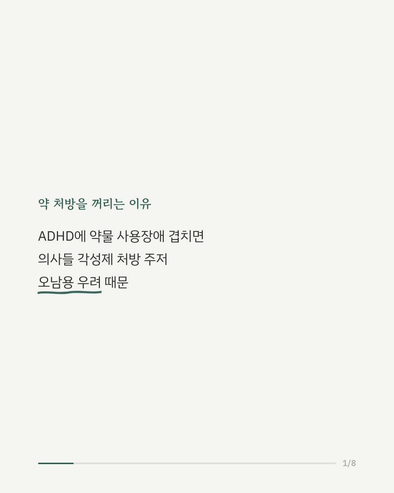
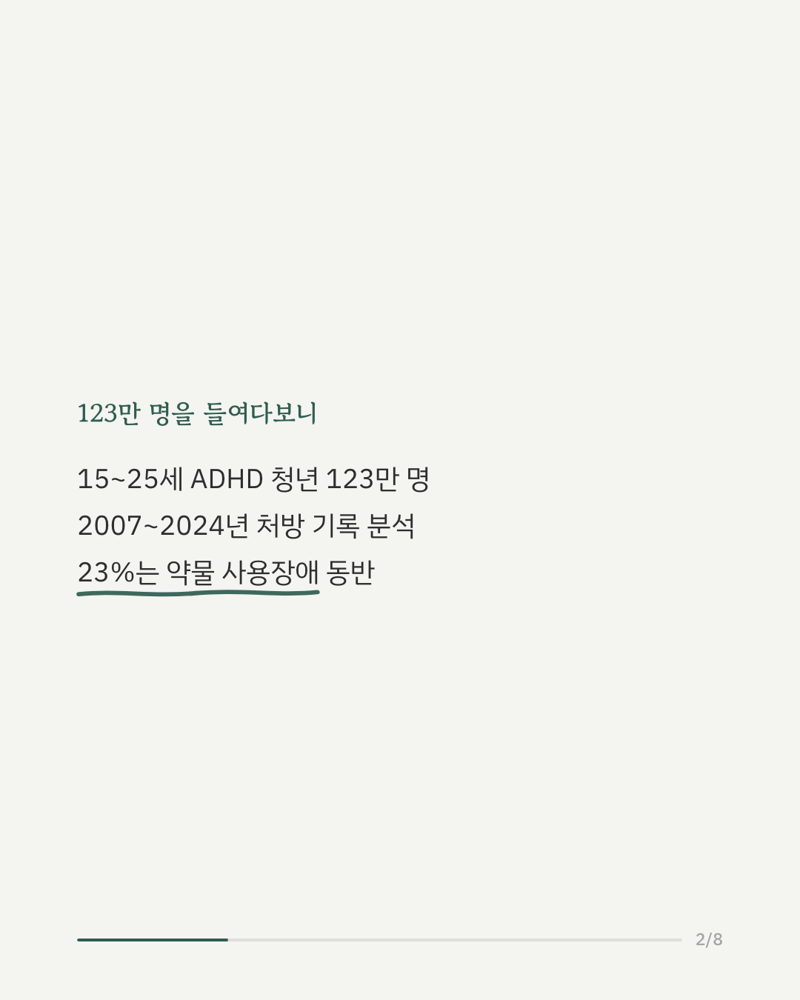
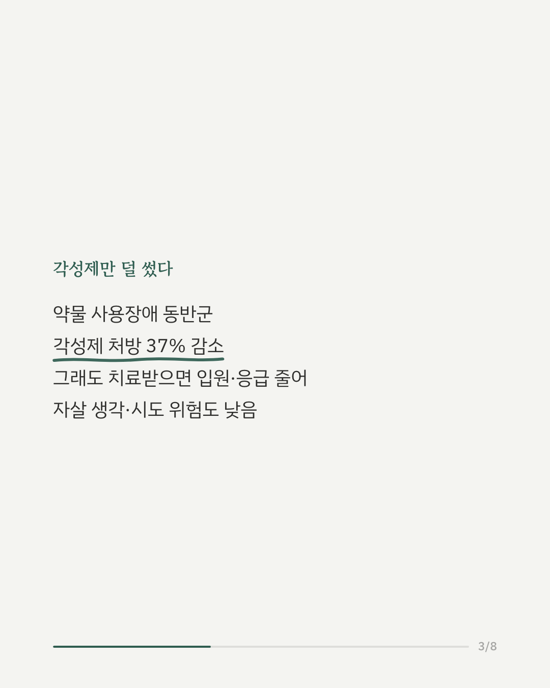
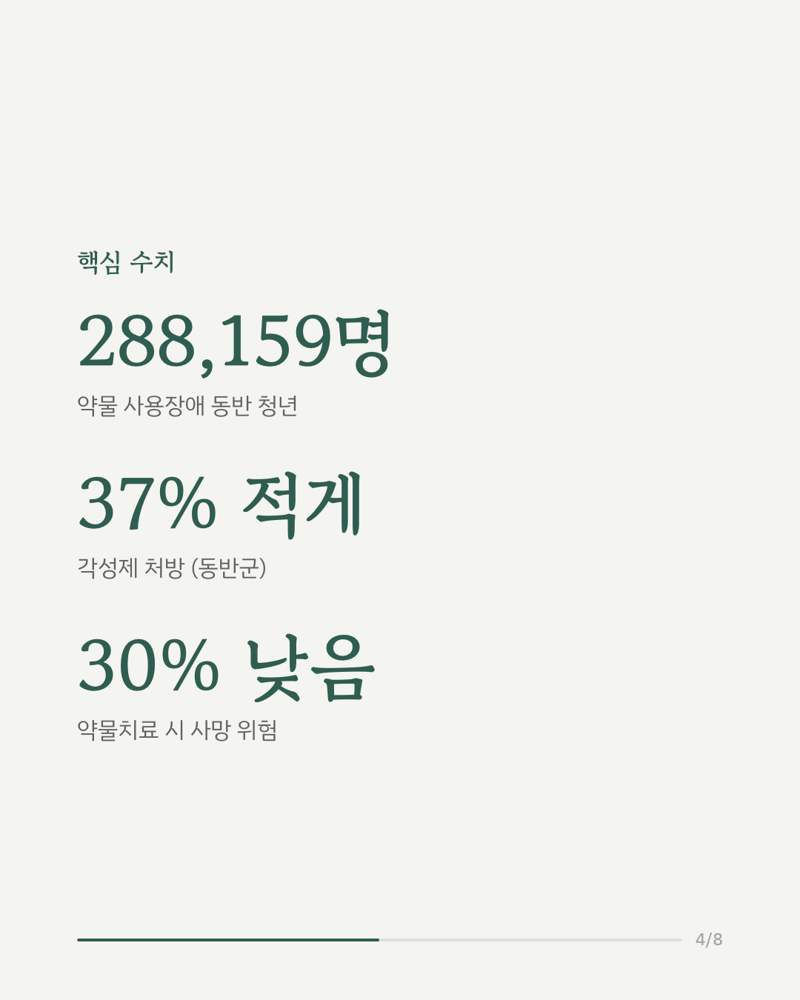
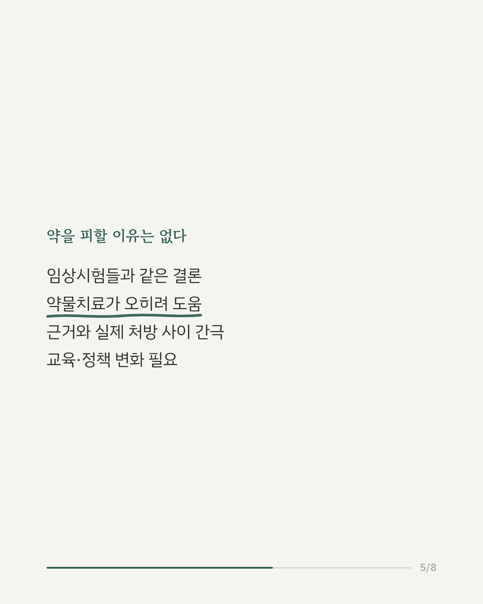
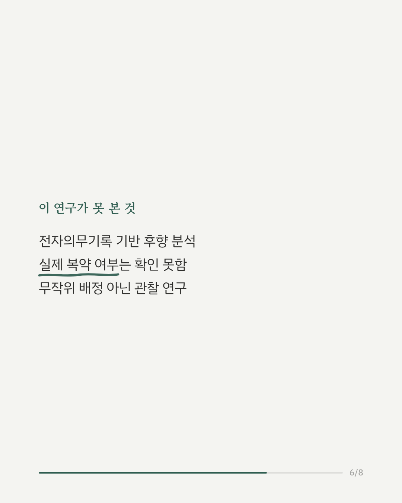
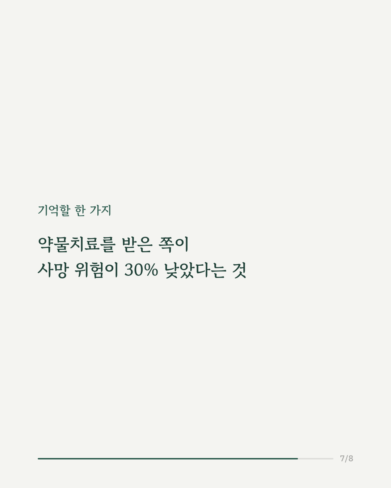
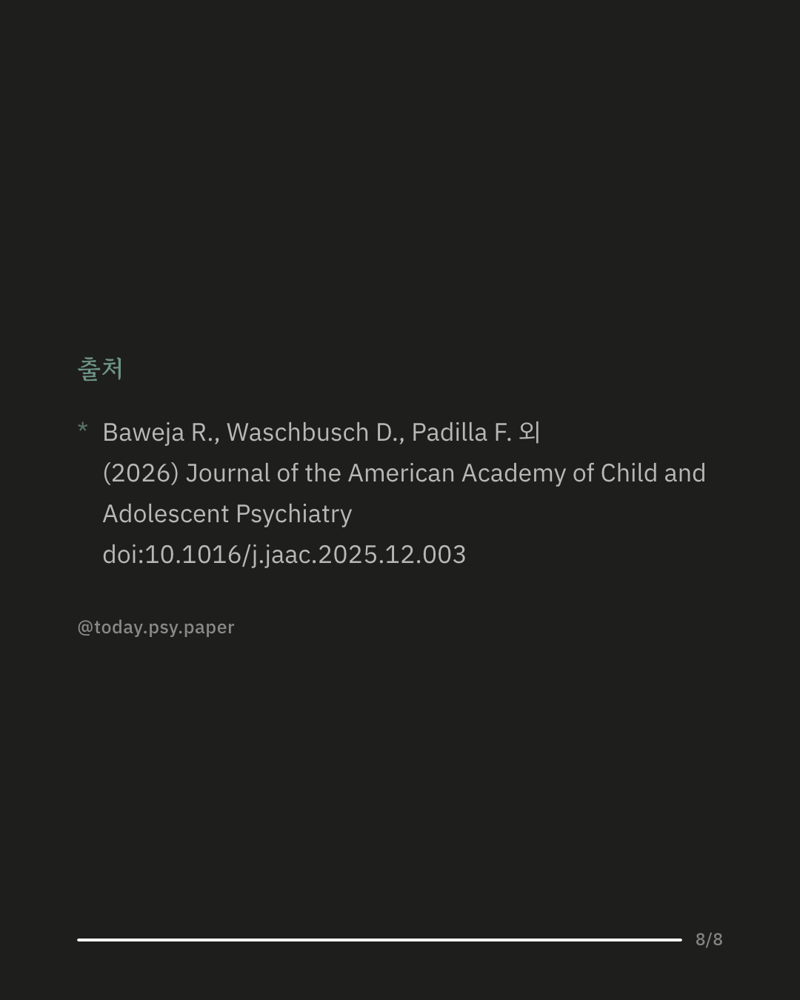

ADHD로 진단받은 15~25세 청년 123만 명의 처방 기록을 살펴본 대규모 후향적 코호트 연구입니다. 이 중 23%인 28만 8천여 명은 약물 사용장애를 함께 갖고 있었습니다. 약물 사용장애가 있는 경우, 병원은 각성제 처방을 37%가량 줄였습니다. 오남용 우려 때문으로 보입니다. 하지만 실제로 ADHD 치료를 받은 청년들은 입원과 응급실 이용이 줄었고, 자살 생각·시도 위험도 낮았습니다. 전체적으로 ADHD 약물치료는 사망 위험을 30% 낮추는 것과 관련이 있었습니다. 임상시험에서 나온 결과와 같은 방향입니다. 중독이 있다는 이유로 약물치료를 피하는 관행이 오히려 근거와 어긋날 수 있다는 뜻입니다. 다만 전자의무기록을 바탕으로 한 관찰 연구라, 처방은 확인했지만 실제 복약 여부까지는 확인하지 못했습니다. Journal of the American Academy of Child and Adolescent Psychiatry (2026), 'Attention-Deficit/Hyperactivity Disorder Treatment Patterns and Association With Clinical Outcomes in Adolescents and Young Adults with Co-Occurring Attention-Deficit/Hyperactivity Disorder and Substance Use Disorder: A Retrospective Analysis' #ADHD치료 #중독치료 #정신건강정보 #임상심리 #약물치료 #성인ADHD #물질사용장애 #정신과치료
python3 publish.py 41421461